Gameplay Automation¶
← Back to the README · Engine: AUTOMATION_ENGINE.md
Lancer Automations runs the procedural parts of play for you: combat actions and reactions, plus Lancer's own out-of-combat flows for scanning, rest, and downtime. Most fire off triggers (a move, a hit, the start of a turn) and resolve the rules.
Settings¶
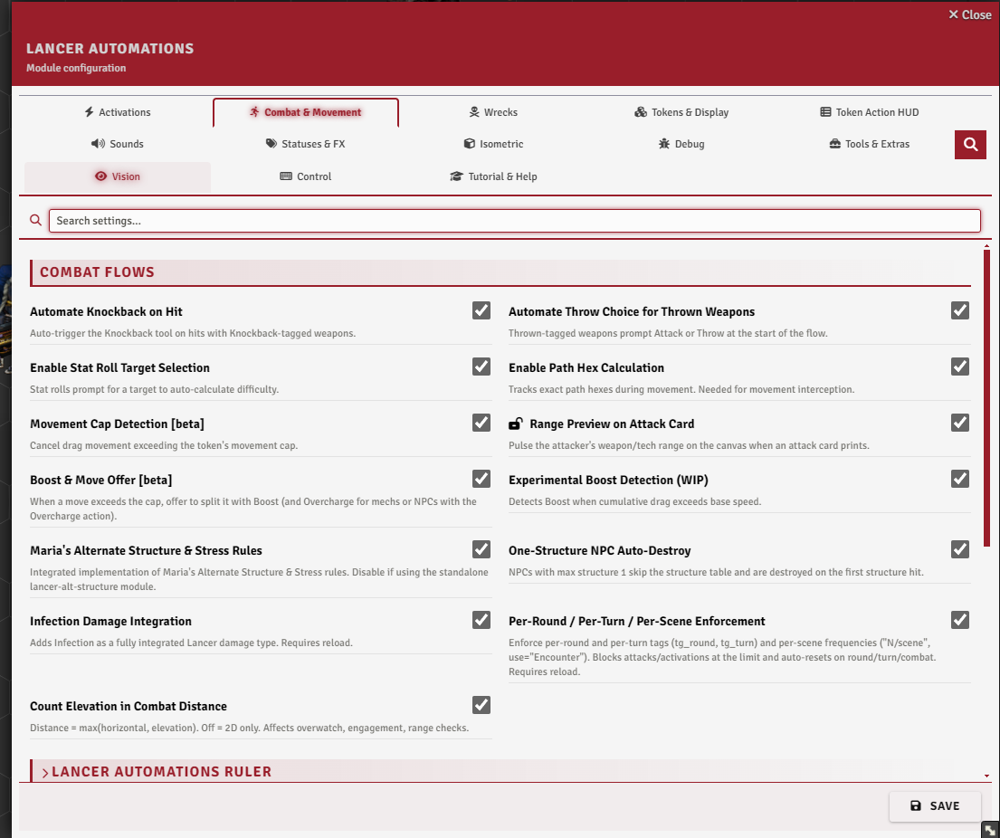
Combat & Movement → Combat Flows, and Activations → Scan.
Built-in actions and reactions¶
Almost all of Lancer's actions and reactions are automated here. These aren't new rules, only Lancer's own actions run for you, and each one can be turned off or rewritten in the Activation Manager (see Automation Engine). Stabilize and Scan already have a version in the Lancer system, which the module swaps for a fuller one.
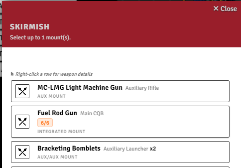
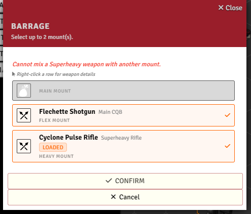
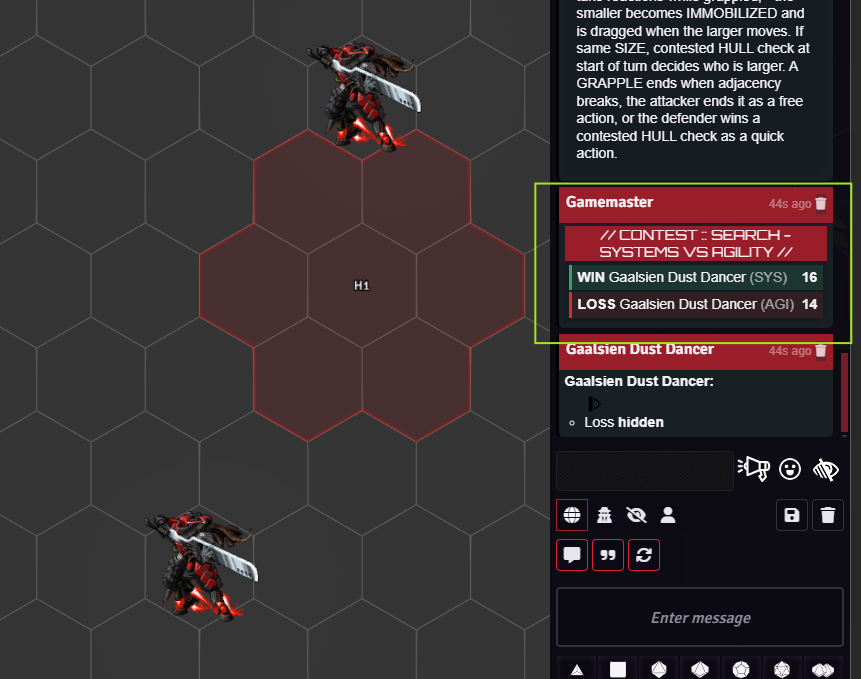
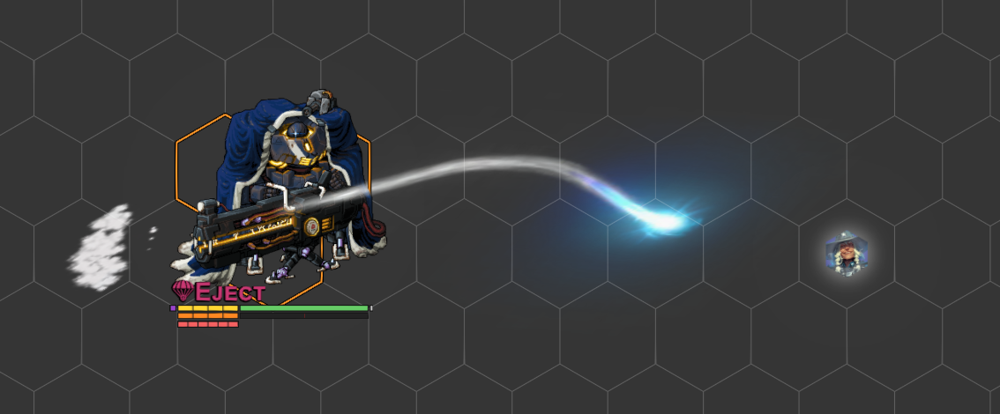
Search, Break Free, and Lancer's other opposed checks are rolled for you as stat contests, and you can trigger one from code with executeContestedCheck(tokenA, statA, tokenB, statB), which returns the winner.
Force Check (TAH Skills, or executeForceCheck) sends a HASE check to picked tokens, each rolled by its owner. Give it a save target and it becomes a save vs that actor's SAVE, pre-targeted in the roller's HUD.
Auto-knockback (the damage dialog's Knockback checkbox, reading a weapon's Knockback tag) is a combat flow covered in Interactive Tools. Throwing is one too: with enableThrowFlow on, attacking a throwable weapon first asks whether to attack or throw, and a thrown attack lands the weapon as a token (see Advanced Targeting and Measurement).
With autoDamageRoll on, the damage roll opens on its own after an attack, and autoDamageApply applies the rolled damage to the targets.
Overwatch¶
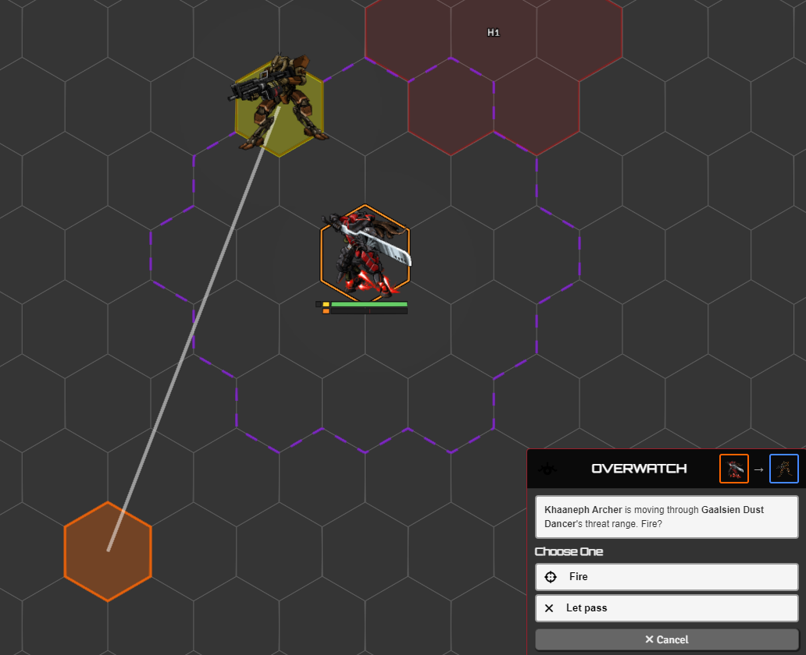
Overwatch is automated two ways. Pick one in the Activation Manager.
- Alert (default): when a hostile moves through your threat range, a prompt lists which of your tokens could react. Click one to select and pan to it. It flags the chance but doesn't stop the move.
- Interrupt (v2): pauses the move and asks the owner to Fire or Let pass, resolving the Skirmish before the move continues. Off by default. Enable it and disable the alert in the Activation Manager.
Threat range reads from Grid-Aware-Auras threat auras when present, otherwise from the actor's weapon threat.
Grapple¶
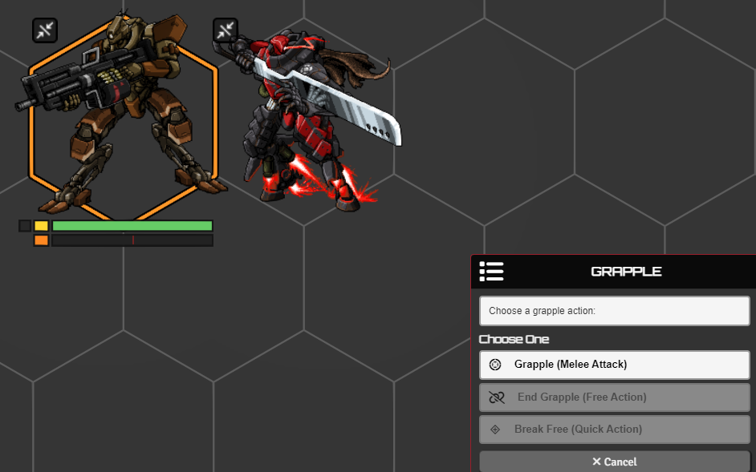
Grapple is automated: on a melee hit it applies Grappled and Grappling, and Immobilizes the smaller side by combined size, with equal sizes settled by a HULL contest at the start of each turn.
The immobilized side is dragged along when the controlling side moves, and a knockback breaks the grapple. The Grapple card also offers End Grapple and Break Free.
A target immune to Grappled is skipped, and there's a Grapple macro too.
Action limits¶
Brace, Dazed, Staggered (Dead Rings), and Slow grey out the actions they block in the HUD while the status is on. The action popup names the locking status. Dazed also shows no movement on the ruler.
Stabilize¶
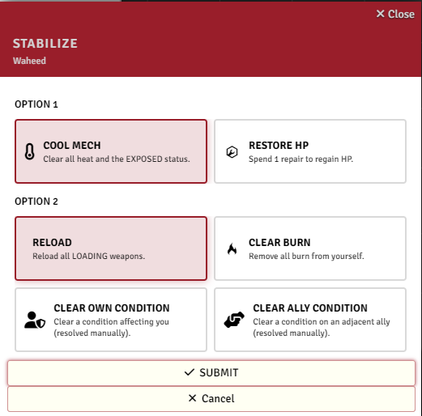
Stabilize gets a clearer dialog for its two choices. An NPC only cools and reloads. Whether it spends a Full action is set by consumeAction (Activation Manager tab), and with infection integration on, clearing burn also clears infection.
Usage limits¶
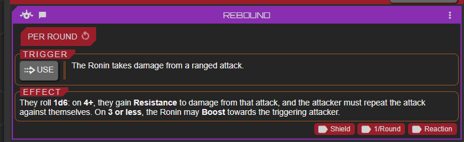
Beyond Lancer's own limited and recharge tracking, weapons and systems tagged per round, per turn, or per scene get their own pip counters injected straight onto their cards in the actor sheet. Spending the action ticks a pip, the action is blocked once they run out, and they reset at the matching boundary: the start of a round, your turn, or a new scene.
Turn this on with enablePerRoundTurnTags (needs a reload).
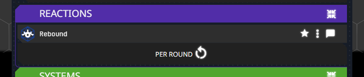
The counters are drawn to match whichever sheet you use, both the default Lancer sheet and the alternate sheet layout.
Skip resource consumption¶
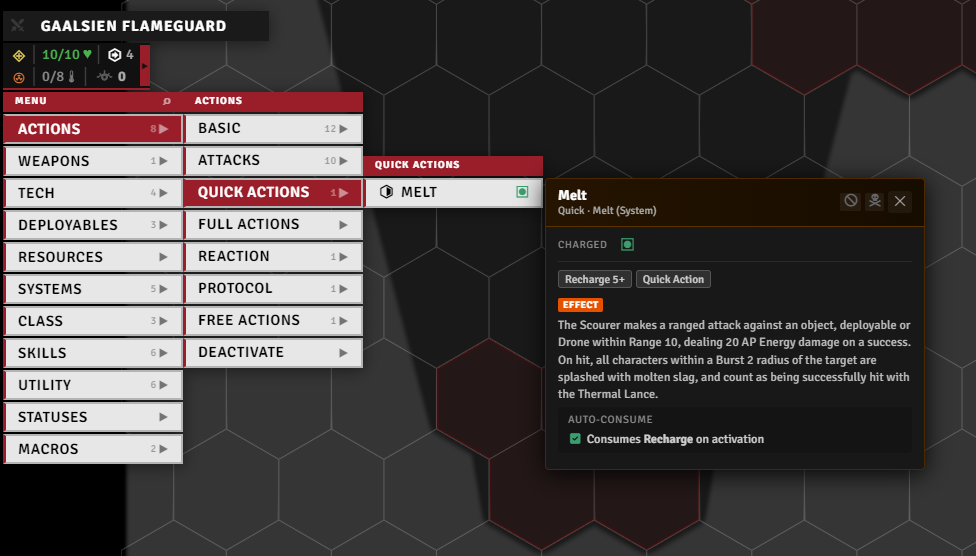
Stop an item from spending its resources when it fires, per resource type. Toggle it from the item's popup in the Token Action HUD, or from Extra Config on the item sheet (same menu as Add Extra).
Reinforcement¶
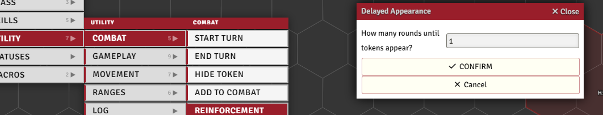
For units that arrive partway through a fight. Drag the new tokens onto the scene holding Alt to drop them hidden, then, in combat, select them, run the reinforcement tool, and set how many rounds until they land. They stay hidden until then.
In their place it drops a countdown marker, but only if it can find one. For each token it looks up a world actor named after that token's size, exactly Size 1, Size 2, Size 0.5 and so on, and spawns that actor's token at the spot, renamed [N] and ticking down each round. You make those placeholder actors yourself, one per size you use. Without a match the token only hides with no marker.
When the round arrives, an NPCs Arriving dialog lists the due tokens with a checkbox each so you pick who actually shows up. The chosen ones reappear with a burst effect (needs Sequencer and JB2A) and their marker is cleared. The rest are deleted along with their markers.
Alt structure & stress¶
Off by default, enableAltStruct swaps Lancer's structure and overheat rolls for the alternative ruleset, my implementation of BadIdeasBureau and Kaffo's LANCER Alternative Structure.
Both are rolled on keep-lowest tables: structure outcomes run from a glancing blow up to a crushing hit, with HULL checks and a system-trauma dialog where you tear off a weapon or system. Stress outcomes cover power failure, emergency shunt, and reactor meltdown, gated by ENGINEERING checks and a meltdown countdown.
enableOneStructNpc simplifies NPCs down to a single structure or stress: they're destroyed or Exposed outright instead of rolling.
Scan¶
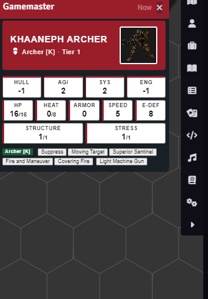
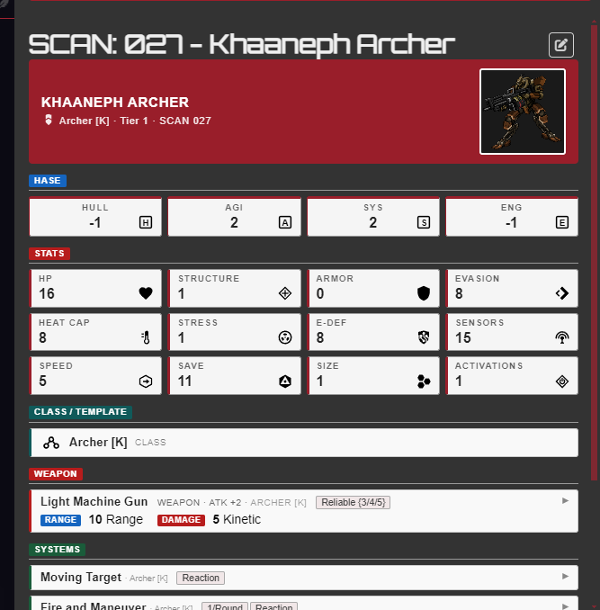
LA's scan runs on both the legacy scan and the native Lancer-system scan. scanJournalSource chooses which one produces the result. Routing it through LA is what makes a scan reusable: each one is recorded as scan ownership, granted to players by scanPlayerOwnershipMode (everyone, a player group, or only the scanner).
Other LA features read that ownership to tell whether a player may see a target's data, so an NPC's information stays hidden until it's scanned. The token stat hint reads UNKNOWN until then, the custom stat bars can be set to appear only once scanned, and the HUD glossary panel lists what you've scanned.
revealStatsWithoutScan turns that gate off: every actor reads as scanned, so stats show without anyone running a scan. The glossary still lists only real scans.
Rest¶
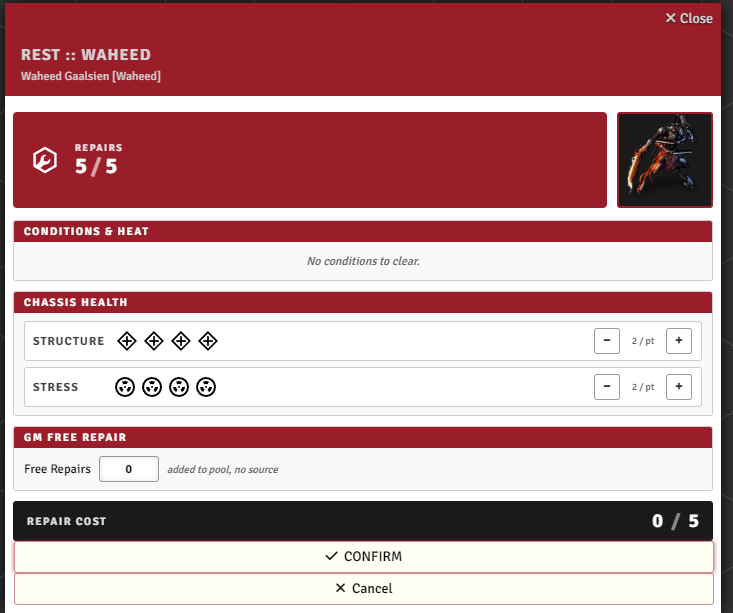
Pick a mech or pilot and open Rest to spend its repair pool. You can pull repairs from nearby allies or have the GM grant more, and at 0 structure or stress it switches to an emergency recovery. A rest report is posted to chat.
Downtime¶
A guided downtime flow: pick the pilot, choose one of the nine downtime activities, set an objective, and roll its skill trigger (with manual-roll and accuracy/difficulty overrides for the GM). The result card shows the outcome and can be logged to a downtime journal, with activity names shown as either in-world or rulebook terms.
Reserves¶
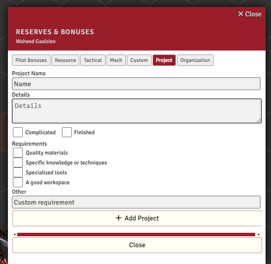
Add Lancer's pilot reserves and bonuses, including custom reserves, projects, and organizations, without opening the compendium. Search to filter, click to add it to the pilot.